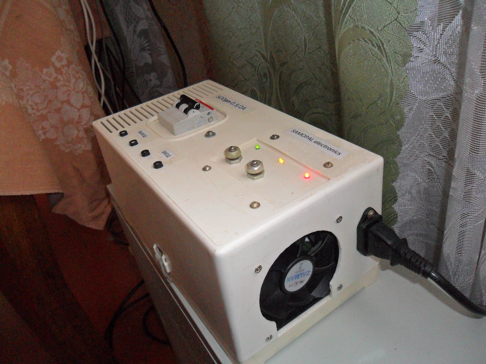
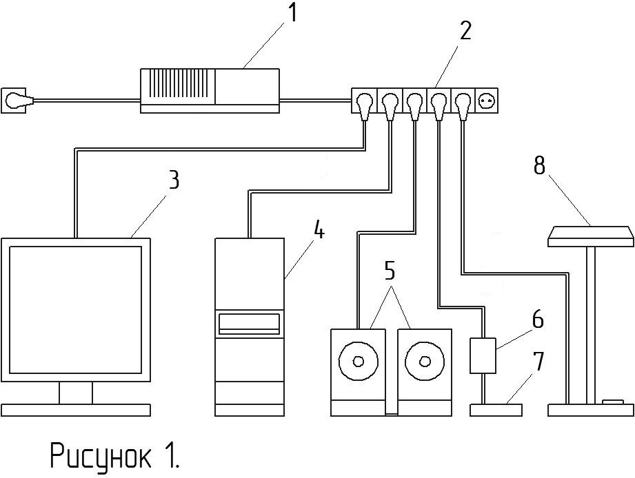
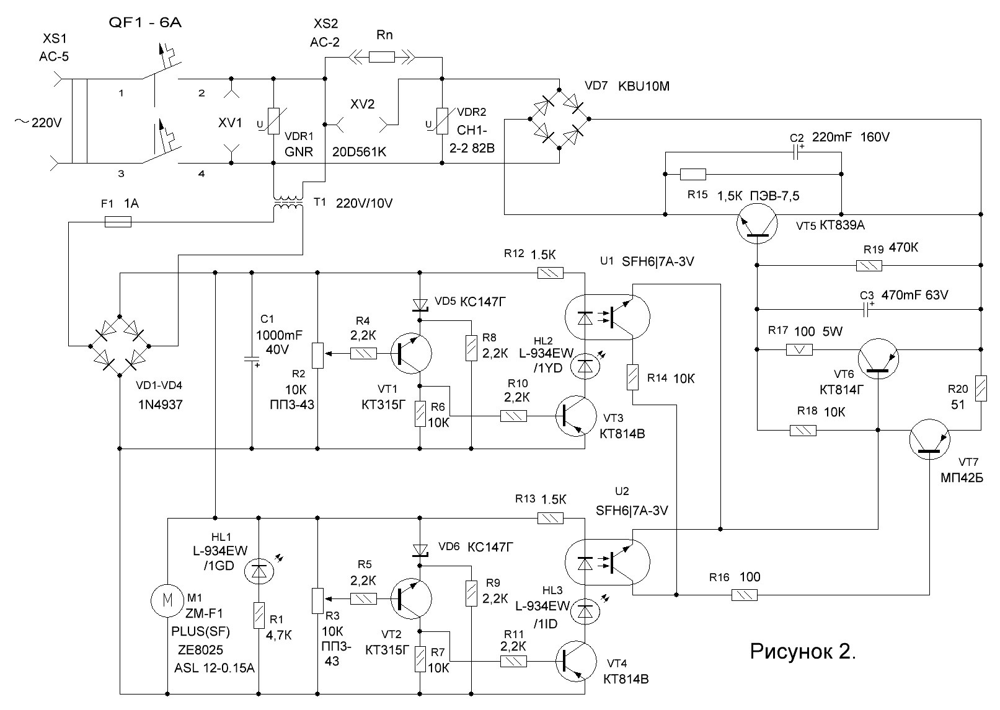

Данное устройство предназначено для увеличения срока службы и защиты от длительных перенапряжений в сети переменного тока промышленной или бытовой электронной аппаратуры.
Понижающий стабилизатор напряжения не отключает аппаратуру при превышении пределов сетевого напряжения, что может приводит к негативным последствиям в случае когда аппаратура должна работать постоянно без отключения, а понижает его до приемлемых значений, обеспечивая нормальную работу электронных устройств потребителей, не допуская их выхода из строя. Превышение максимальных пределов сетевого напряжения на некоторых участках электросетей может длиться несколько часов, а иногда и суток, что увеличивает риск повреждения электронных устройств нагрузки, импульсных блоков питания, осветительных приборов. Выдержать напряжение в пределах нормы на некоторых участках электросетей бывает практически невозможно по многим причинам, в этом случаи возможна установка данного стабилизатора для защиты аппаратуры. Конструкция с использованием транзистора в качестве регулятора напряжения вносит минимум искажений в форму синусоидального напряжения питания на выходе устройства.
На рисунке 1 изображены: 1 - понижающий стабилизатор напряжения; 2 - удлинитель; 3 – монитор; 4 - системный блок; 5 – колонки; 7,6 - модем с блоком питания; 8 - настольная лампа.
Представленное устройство свободно может поддерживать работу не только одного компьютера, но так же монитора, модема и других маломощных, электронных устройств как указано на рисунке 1.
2. Принципиальная схема понижающего стабилизатора напряжения.
Устройство состоит из нескольких основных узлов представленных в общей схеме на рисунке 2. Непосредственно узла производящего регулировку напряжения на нагрузке, включающего в себя диодный мост VD7, транзисторы VT5, VT6, VT7. И двух узлов в цепи низкого напряжения собранных на стабилитронах VD5, VD6 и транзисторах VT1, VT2, VT3, VT4, эти узлы являются по сути датчиками регистрирующими изменение сетевого напряжения и производящими переключение узла регулировки через оптроны U1, U2. Узлы датчиков напряжения были собранны на основе схемы сигнализатора перенапряжения представленной на сайте radiofanatic.ru.
Работает устройство по следующему принципу. Когда напряжение сети на входе устройства находиться в пределах 230В, напряжение питания узлов датчиков находиться в пределах 10В и они не фиксируют превышения напряжения, стабилитроны VD5, VD6 закрыты, следовательно и транзисторы VT1, VT2, VT3, VT4 с оптронами U1, U2 находятся в закрытом состоянии. В это время транзистор VT5 находится в открытом состоянии и на нагрузку Rn подано напряжение сети.
При повышении напряжения сети до 245В напряжение питания узлов датчиков повышается до открытия стабилитрона VD5, что приводит к открытию транзисторов VT1, VT3 и оптрона U1. Транзистор VT7 открываясь производит небольшое запирание транзисторов VT5, VT6 способствуя уменьшению их коллекторных токов, напряжение на нагрузке Rn понижается до 235В.
При повышении напряжения сети до 255В напряжение питания узлов датчиков повышается до открытия стабилитрона VD6, что приводит к открытию транзисторов VT2, VT4 и оптрона U2. Транзистор VT7 ещё больше открываясь за счет отсутствия в выходной цепи резистора типа R14 производит большее запирание транзисторов VT5, VT6 способствуя уменьшению их коллекторных токов, напряжение на нагрузке Rn понижается до 230В.
При дальнейшем повышении напряжения сети напряжение на нагрузке Rn будет увеличиваться на ту же величину без понижения, например при напряжении сети 265В напряжение на нагрузке Rn будет составлять 240В.
Трансформатор T1 с диодами VD1-VD4 и конденсатором C1 обеспечивают питание цепь датчиков напряжения и вентилятора охлаждения радиаторов. С помощью переменных резисторов R2, R3 производиться подстройка режимов работы узлов датчиков напряжения. Светодиод HL1 является индикатором питания стабилизатора, свечение светодиодов HL2 и HL3 указывает на срабатывание соответствующего датчика напряжения. Оптроны U1 и U2 обеспечивают гальваническую развязку цепей низкого напряжения с узлом регулировки напряжения. Резистор R15 и конденсатор C1 образуют фильтр, защищая транзистор VT5 от выхода из строя из-за пульсаций выпрямленного напряжения. Разъемы XV1 и XV2 предназначены для подключения вольтметров ко входу и выходу. Вентилятор M1 охлаждает радиаторы силового транзистора VT5 и выпрямительного диодного моста VD7, хотя при данной нагрузке они имеют незначительный нагрев. Варисторы VDR1 и VDR2 обеспечивают защиту от импульсных скачков напряжения в сети. Автоматический выключатель QF-1 служит защитой от коротких замыканий в нагрузке и самом стабилизаторе.
От значения общего сопротивления нагрузки и тока потребления зависит предел уменьшения напряжения данным устройством, что является одним из недостатков.
Соблюдайте меры безопасности при сборке данного устройства, по сколку его токоведущие части находятся под опасным для человека напряжением.
Автор: Александр Кузнецов